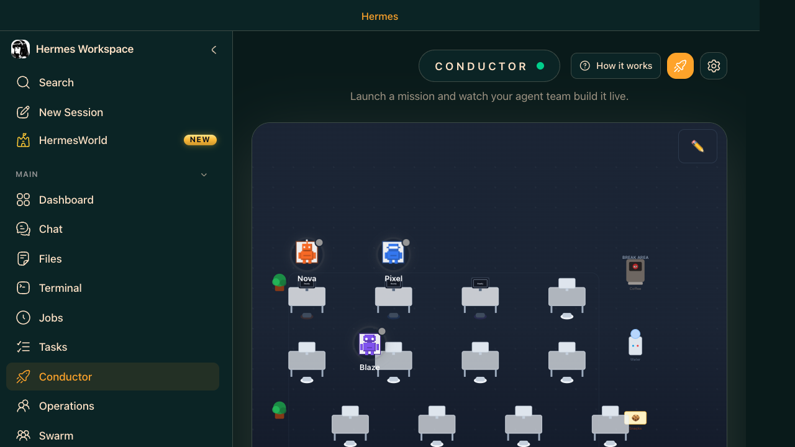

Conductor — Mission Control
Conductor is your mission orchestrator. You describe a goal in plain English. It breaks the mission into subtasks and assigns them to a pool of worker agents, which may appear as names like Nova, Pixel, or Blaze. Those names are example roster labels for the mission team, not special pre-created personas you must build manually. Conductor coordinates the work and shows progress as each slice completes.
- New Mission — describe your goal; Conductor decomposes it
- Agent team — names such as Nova, Pixel, Blaze are mission-worker labels shown with status: Ready / Working / Done
- Mission list — all active and past missions with live status
- How it works — button explains the orchestration model
- Live updates — agents report progress checkpoints in real time
Conductor uses the dashboard mission API when hermes dashboard is running. When the dashboard endpoint is absent, Workspace falls back to native Swarm dispatch. Both paths produce the same result.

Goal: Add a /api/reports/weekly endpoint that queries Jira, formats data, and returns JSON. You want: the implementation, tests, and updated README — without touching the keyboard yourself.
Use Conductor after Tasks: Conductor is the next level up from the board. It takes a goal and decomposes it into tasks automatically. This is the right place to move after you understand the board lifecycle.
Sequence: Tasks → Conductor → Operations → Swarm. Beginner combo: one small mission, clear success criteria, and one Builder-type task. Intermediate: multi-agent mission with tests/docs. Advanced: parallel workstreams, custom profiles, and swarm automation.
Live Setup — Step by Step
- Ensure
hermes gateway runandhermes dashboardare both running - Open Hermes Workspace → navigate to Conductor
- Click New Mission — describe your goal (see prompt below)
- Conductor decomposes the mission: Builder agent gets the code task, Reviewer gets tests, Scribe gets docs
- Watch the worker labels (for example Nova/Pixel/Blaze) change from Ready → Working
- Checkpoints appear as agents report progress — review without blocking them
- Mission completes: review the output in the mission results panel
git stash if needed.Stop after the implementation plan is written and wait for human approval before any code changes begin. In that pattern, Conductor creates a planning or review task first, and the mission does not advance to the execution work until the human approves or adds a comment. This is not an automatic hidden toggle; it is enforced by the mission design and the task dependency graph.